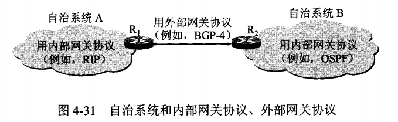
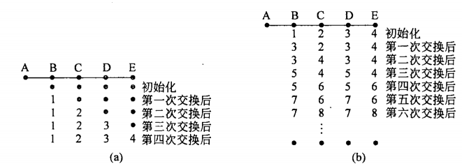
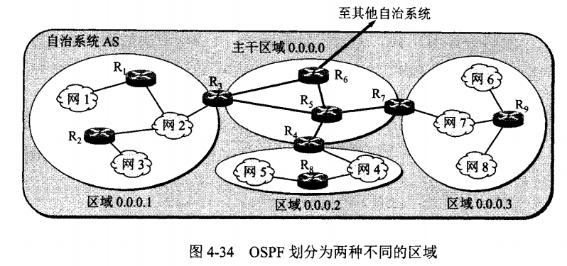

路由协议
我们知道，路由器最重要的功能就是转发和路由。可以把路由器想象成内部有两个进程。其中一个进程在每个数据包到达的时候对它进行处理，它在路由表中查找该数据包所对应的出境线路。这个进程即为转发（forwarding )进程：另一个进程负责生成和更新路由表，这正是路由(routing)算法发挥作用的地方。
转发
首先了解一下路由器是如何转发分组的。下面是电脑路由表示例，整个路由表很大，我只取了前面的一小部分。
IPv4 Route Table
===========================================================================
Active Routes:
Network Destination Netmask Gateway Interface Metric
0.0.0.0 0.0.0.0 10.162.0.1 10.162.54.218 40
10.162.0.0 255.255.0.0 On-link 10.162.54.218 296
10.162.54.218 255.255.255.255 On-link 10.162.54.218 296
10.162.255.255 255.255.255.255 On-link 10.162.54.218 296
127.0.0.0 255.0.0.0 On-link 127.0.0.1 331
127.0.0.1 255.255.255.255 On-link 127.0.0.1 331
===========================================================================
我们通过Longest Prefix Match算法来进行转发目的的选择。假设现在我有一个包的目的地址为127.0.0.2，
- 根据
dst & Netmask == Network进行匹配的筛选。发现Network=0.0.0.0和Network=127.0.0.0都是匹配的。 - 那么我们需要选择哪个作为转发的目的呢？我们选择子网掩码最长的一个进行匹配，也就是
127.0.0.0。 - 然后我们只需要把数据转发到
Interface==127.0.0.1端口即可。Gateway==On-link，ARP协议把IP地址转成MAC地址，直接就到了。（当然127.0.0.2好像这一步也不需要，应该就直接到了）（如果匹配到了0.0.0.0，是ARP把10.162.0.1转成MAC地址转发过去，后续的事情就交给10.162.0.1指定的路由器了）
静态路由
预先计算好（手动配置好）路由信息，在网络启动时下载到路由器中。适合于网络结构非常清楚的场合变化不大的场合。
动态路由
在目前的互联网中，路由选择协议可以分成两大类，分别是：
- 内部网关协议IGP。指的是在一个内部自制系统(AS)中使用的路由选择协议，常用的有RIP和OSPF。
- 外部网关协议EGP。用来连接不同的自治系统。比如目前使用的BGP-4。

Flooding
泛洪算法，这种技术将每一个入境包发送到除了该数据包到达的那条线路意外的每条出境线路（有点像集线器）。
抑制数据包泛滥的一个方法是计数（类似于TTL），当计数器达到0的话就丢弃数据包。
抑制数据包泛滥的一种更好技术是让路由器跟踪己经泛洪过的数据包，从而避免第二次发送它们。比如让路由器为每个端口设置一张表，记录已经收到的来自端口连接的路由器的包序号，如果入境数据包在这张表中，就不能再被泛洪到其他路由器。
虽然这种方法的效率很低，但是适合于广播，鲁棒性也很好。
Distance Vector Routing - RIP
距离矢量路由（distance vector routing ）算法是这样工作的：每个路由器维护一张表（即一个矢量〉，表中列出了当前己知的到每个目标的最佳距离，以及所使用的链路。这些表通过邻居之间相互交换信息而不断被更新，最终每个路由器都了解到达每个目的地的最佳链路。
这种算法有一个特点，“好消息穿得很快，坏消息传的很慢”。左图为好消息，A一开始停机初始化之后开机。右图为坏消息，A一开始正常初始化之后关机，然后就陷入了无穷计数问题。 假设每条线的distance=1。

已经有许多试图解决该问题的工作，例如，防止路由器向邻居返回一个从该邻居获得的最佳路径，这个方法称为带有染毒逆向的水平分裂法。问题的核心在于当X告诉Y它有一条通往某个地方的路径，Y无从知道自己是否己在这条路径上。
路由信息协议RIP（Routing Information Protocol）是基于距离矢量算法的路由协议，利用跳数来作为计量标准。在带宽、配置和管理方面要求较低，主要适合于规模较小的网络中。
RIP 允许一条路径最多只能包含 15 个路由器。因此“距离”等于16时即相当于不可达。可见 RIP 只适用于小型互联网。
Link State Routing - OSPF
链路状态路由算法的设计思想非常简单，可以用五个部分加以描述。每一个路由器必须完成以下的事情，算法才能正常工作：
- 发现它的邻居节点，并了解其网络地址。
- 设置到每个邻居节点的距离或者成本度量值。
- 构造一个包含所有刚刚获知的链路信息包。
- 将这个包发送给所有其他的路由器，并接收来自所有其他路由器的信息包。
- 计算出到每个其他路由器的最短路径。
实际上，算法将完整的拓扑结构分发给了每一个路由器。然后每个路由器运行Dijkstra算法就可以找出从本地到每一个其他路由器的最短路径。
OSPF采用Dijkstra算法来计算最短路径树。它使用Cost作为路由度量。链路状态数据库 （LSDB）用来保存当前网络拓扑结构，路由器上属于同一区域的链路状态数据库是相同的（属于多个区域的路由器会为每个区域维护一份链路状态数据库）。
OSPF提出了“区域（Area）”的概念，一个网络可以由单一区域或者多个区域组成。其中，一个特别的区域被称为骨干区域（Backbone Area），该区域是整个OSPF网络的核心区域，并且所有其他的区域都与之直接连接。所有的内部路由都通过骨干区域传递到其他非骨干区域。所有的区域都必须直接连接到骨干区域，如果不能创建直接连接，那么可以通过**虚链路（virtual link）**和骨干区域创建虚拟连接。
OSPF定义了以下4种路由器类型：
每一台OSPF路由器都有一个路由器标识符（Identifier），一般写作路由器ID。路由器ID由一个长度为32 bits的字段所定义，通常用IPv4地址格式来表示。如果没有显式的设置路由器ID，则该路由器上最大的活跃逻辑接口IP地址将成为路由器ID；如果路由器不存在逻辑接口，则最大的活跃物理接口IP地址将成为路由器ID。注意，不要将路由器类型和指定路由器（Designated Router，DR）、备份指定路由器（Backup Designated Router，BDR）混淆，DR和BDR是路由器接口属性，而不是整个路由器的属性。
- 内部路由器（Internal Router）：如果一台路由器上所有启用了OSPF的接口都在同一区域，那么这台路由器就是内部路由器。
- 骨干路由器（Backbone Router）：骨干路由器是指至少有一个启用了OSPF的接口是和骨干区域（Area 0）相连的路由器。一台骨干路由器也可以同时是ABR或ASBR，如上图中的R2和R3。
- 区域边界路由器（Area Border Router，ABR）：区域边界路由器是指连接一个或者多个区域的路由器。区域边界路由器为每一个与之相连的区域维护一份链路状态数据库，因此区域边界路由器需要比内部路由器更多的内存资源和更高性能的处理器。
- 自治系统边界路由器（Autonomous System Boundary Router，ASBR）：自治系统边界路由器（ASBR）用来把从其他路由协议（如BGP、EIGRP、其他进程号的OSPF等）学习到的路由以路由重分发的方式注入到OSPF进程中，从而使得整个OSPF域内的路由器都可以学习到这些路由（除了末梢区域内的路由器）。一台ASBR可以是OSPF域内非末梢区域的任何路由器，它可以是内部路由器、区域边界路由器、骨干路由器。
OSPF定义了4种网络类型
- 点到点网络（point-to-point）：单独连接一对路由器的网络
- 广播网络（broadcast）：广播网络即可以同时连接多于两台设备的网络，如以太网、令牌环网、FDDI，广播网络上的路由器发送的组播/广播数据包会被其他与之相连的路由器收到。在广播网络上的OSPF路由器会选举一台指定路由器（DR）和一台备份指定路由器（BDR），DR和BDR是路由器接口属性，而不是整个路由器的属性。
- 非广播多路访问网络（non-broadcast multi-access，NBMA）：可以同时连接两台以上的路由器，但是这种网络没有广播数据包的能力。在NBMA网络上需要选举DR和BDR，并且所有的OSPF数据包都是单播发送的。
- 点到多点网络（Point-to-MultiPoint）
此外还有一种特殊的网络类型，称之Loopback类型。OSPF路由器上的Loopback接口在默认状态下均为此类型，不能人工设置一个接口的网络类型为Loopback。Loopback接口是逻辑的接口,即虚拟的软件接口，它们并不是真正的路由器接口。在OSPF路由协议中配置使用回环接口是为了确保在OSPF进程中总有一个激活的接口，回环接口可以用于OSPF的配置和诊断。
一般来说，创建OSPF完全邻接时会经过以下状态：
- 失效状态（Down）：这是邻居会话的初始状态，表示最近没有从邻居收到信息。在NBMA网络上，可能仍然会以较低频率向处于Down状态的邻居发送Hello数据包。
- 尝试状态（Attempt）：该状态仅仅适用于连接在NBMA网络上的邻居。该状态表示最近没有从邻居收到信息，但仍需要作进一步的尝试，来联系邻居。这时按某一特定间隔向邻居发送Hello数据包。
- 初始状态（Init）:在此状态下，表示最近收到了从邻居发来的Hello数据包。但是，仍然没有和邻居创建双向通信（Bidirectional Communication），例如，路由器自身并没有出现在邻居发送的Hello数据包中。
- 双向通信状态（2-Way）：此状态意味着两台路由器之间创建了双向通信。在此状态下还将进行DR和BDR的选举（只有处于2-Way状态的路由器才有资格参选DR和BDR，路由器只与DR和BDR创建完全邻居关系，其他路由器之间的邻居状态停留在2-Way状态。）
- 信息交换初始状态（ExStart）：这个状态是创建邻接关系的第一步。该状态的目标是决定信息交换时路由器的主从关系，并确定初始数据库描述（DD）数据包的序列号。具有最高路由器ID的路由器将成为主路由器。
- 信息交换状态（ExChange）：在此状态的路由器通过向邻居发送DD数据包来描述其完整的链路状态数据库。每一个DD数据包都有一个序列号，并且需要被显式的确认。在任何时候，每次只能发送一个DD数据包。在此状态下，路由器也可以发送链路状态请求数据包，用来向邻居请求最新的LSA。实际上，这些状态的邻接关系完全有能力发送和接收所有类型的OSPF协议数据包。
- 信息加载状态（Loading）：在此状态下，路由器将会向邻居路由器发送链路状态请求数据包，用来请求信息交换状态发现的最新的LSA。
- 完全邻接状态（Full）：在此状态下，邻居路由器形成完全邻接关系。这些邻接关系将会在路由器LSA和网络LSA中被描述。
为了让OSPF能用于规模很大的网络，OSPF将AS划分成若干个更小的范围，叫做Area。泛洪交换被局限于每个Area内。

BGP
边界网关协议（英语：Border Gateway Protocol，缩写：BGP）是互联网上一个核心的去中心化自治路由协议。它通过维护IP路由表或“前缀”表来实现**自治系统（AS）**之间的可达性，属于矢量路由协议。BGP不使用传统的内部网关协议（IGP）的指标，而使用基于路径、网络策略或规则集来决定路由。
一个自治系统内部使用的路由协议称为内部网管协议IGP，比如RIP和OSPF；自治系统之间使用的路由协议称为外部网关协议EGP，比如BGP。
BGP用于在不同的自治系统（AS）之间交换路由信息。当两个AS需要交换路由信息时，每个AS都必须指定一个运行BGP的节点，来代表AS与其他的AS交换路由信息。这个节点可以是一个主机。但通常是路由器来执行BGP。两个AS中利用BGP交换信息的路由器也被称为边界网关（Border Gateway）或边界路由器（Border Router）。
每个AS至少要选择一个路由器作为AS的 BGP speaker 。
层次路由
随着网络规模的增长，路由表也成比例的增长。当网络增长到一定程度，每个路由器不可能再为其他每一个路由器维护一个表项。路由分层次进行。